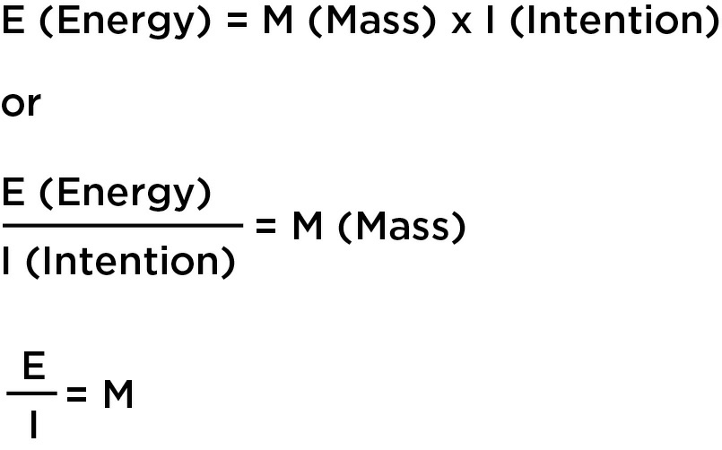
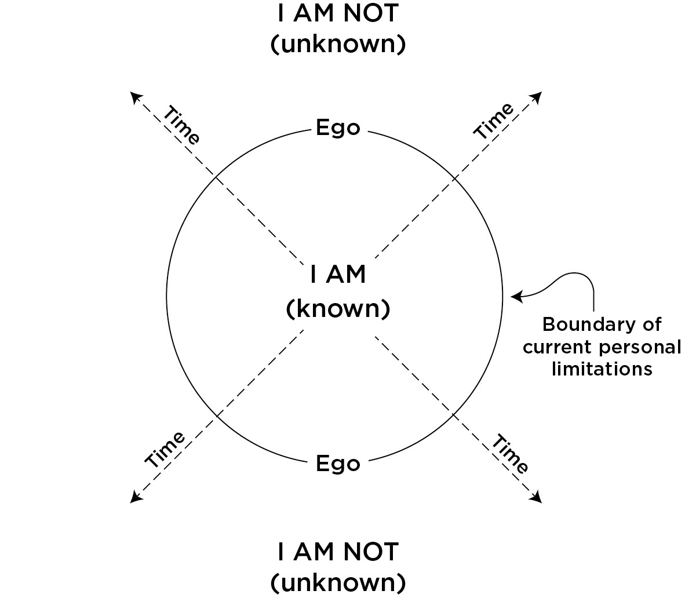

How did this happen to me? The buildup to it seemed to involve some combination of my long-held questions and deep curiosity about life, the inability to find peace with my daily experience, and a real readiness to truly admit, “I don’t have the answers—I don't know.” This curiosity and readiness put me in such a receptive state of mind that I was more open to receive new information than I ever had been in my entire life. I did not care how the information would change me—I was open to it at any cost. As my awakening began I suddenly realized that the information I was looking for over many years was already present within the everyday happenings and details of my daily existence, minute by minute, hour by hour, and day by day. The answers had always been right in front of me!
When I look back on the unfolding of my own life, I am struck by the undeniable precision with which everything has happened. From the bigger challenges and heartbreaks to the greater joys and successes, each event has been linked with synchronicity to a greater intention that I have deeply pursued in the world. Each painful lesson, emotion, or feeling that things were taking too much time was necessary, even down to the most finite detail of the experience.
It seems like just yesterday that I looked at people I met, passed on the street, or knew in some fashion as though they seemed to have everything I wanted to create. I wondered to myself, “How in the world did this happen for them? How did they find their soul mate, their dream job, a peaceful and confident state of mind?” Or, even more important, “How in the world is this going to happen for me?” Many of my dreams and goals seemed so far away and so unreachable that when I was younger it was often too painful to even think about.
Every dream and idea we focus on has a particular set of conditions that need to come together for that specific intention to be realized. This sets the timetable for each intention on the journey to its realization.
An analogy would be to think of time from the perspective of using a magnifying glass to start a fire. A magnifying glass takes the light and energy from the sun, and through the curvature of the glass, concentrates that energy on one small spot of kindling, producing a high level of heat. This concentration of heat is what is needed in order to ignite the kindling. The longer it takes to focus the energy on one spot, the longer it will take to start a fire.
Your intentions are just like this. You have to have enough willpower to focus on your intentions long enough, with the right amount of precision on what you want and how to accomplish it, for your intended reality to ignite.
Your way of looking at a particular situation can spark creativity and collapse time, or it can inhibit creativity and stretch time.
PART I
THE PURPOSE OF TIME
This is exactly what “time” provides for you. It allows you to experience each frame of your life right in front of your eyes, moment by moment, at a pace that is determined by you.
Here is where it gets even more interesting and extremely exciting. Not only do you decide the pace of time as it relates to many of your creative expressions, but you are also the director, writer, and producer—you decide the story, content, location, and characters. What is even more exhilarating and empowering is that right now, as the writer, you have the opportunity to change the story and its context in any single moment.
This single idea is the absolute validation of how much you matter. You are integral to everything you come in contact with, everything you direct your attention on, and every choice and action you take in the world. You have a massive influence and significance in every aspect of your life!
“As a man who has devoted his whole life to the most clear-headed science, to the study of matter, I can tell you as a result of my research about atoms this much: There is no matter as such. All matter originates and exists only by virtue of a force which brings the particle of an atom to vibration and holds this most minute solar system of the atom together. We must assume behind this force the existence of a conscious and intelligent mind. This mind is the matrix of all matter.”
—MAX PLANCK (theoretical physicist who originated Quantum theory)
AT THE MOST FUNDAMENTAL LEVEL of matter, it has been revealed that the observer (you) is who is having the greatest impact on how reality expresses itself. You are the key in the equation. What holds all matter together is the observer, an awareness or “consciousness.”

This is the general formula for creation. Creation is the continual process whereby pure, formless Energy (E) is continually divided by Intention (I) and formed into Matter (M).
THE WAY YOU CHOOSE TO see yourself as an individual “I” is destined for the experience of “AM” as your intention takes your energy and turns it into matter in an infinite number of ways.
Anyone who is not shocked by quantum theory has not understood it.
The constant process of birth and death that you witness all around you is the evidence of the inability of matter to remain as one individual thing (some-thing). It must prove itself to be part of everything or no individual thing (no-thing) by recycling itself back into the very essence from which it came. At the same time it must prove itself to be some-thing again: I AM.
Along this never-ending journey of energy to matter you are shaping it and having a very direct effect on it in some way. That is how powerful you are and how important you are to your world. Your intention and attention give meaning and a sense of bonding power to all the matter around you. In any given moment, your thoughts, feelings, and actions affect everyone from your significant other to your children, from your coworkers to your friends.
You find that you have the power to change it all. This golden opportunity exists for you, always, right now.
What this all comes down to is the word choice. Your role, as granted to you by the nature of free will, is to endlessly choose how you will demonstrate who you believe you are. This is the root of it all. Your life is about using this free will of choice to create what you feel best serves you and your state of mind.
The chief beauty about time is that you cannot waste it in advance. The next year, the next day, the next hour are lying ready for you, as perfect, as unspoiled, as if you have never wasted or misapplied a single moment in all your life. You can turn over a new leaf every hour if you choose.
Just the state of being alive has certain requirements. Due to the mechanics of creation and evolution and the nature of change and movement, if you choose not to participate in the creative process of life, life will still move on without you. What will happen is that you will eventually feel a loss of control. You will end up being dragged kicking and screaming as life pulls you around for a painful ride. If you choose to participate fully in life, and take the time to really understand more of how it works, however, your ride will be more comfortable and you will realize you have a massive influence on the direction it takes. And, last, if you try to force change (trying to get ahead of time), you will have to be very patient while you wait for your world and others in it to catch up with you. Whether you like it or not, you are in the play. You might as well take responsibility for as much of the writing of your character’s story as you can. After all—you are the star.
TO ACCOMPLISH WHAT YOU WANT in life you must be fully aware of what works and what doesn’t work in each situation. Trying to lose weight by starving yourself is not the most optimal path to a healthy body. If you take your loved ones for granted and do not pay enough attention to their needs, your relationships can suffer. If you cut corners with your customers and fail to deliver as promised, they may end up favoring your competitors when you least expect it. If you ignore irregularities in your health and do not give your body’s well-being enough attention, you could face serious health consequences when it is too late to do anything about it.
I could go on with other simple examples, but the point is that you cannot avoid the truth of the systems in place around you, and you must accept these truths initially in order to more quickly and more painlessly achieve what you creatively desire. This is a demonstration of the order of life and its precise ways. As you test these various systems, and they push back and protect themselves, you will see how heavily they factor in to determining your experience of time. Although many of these examples seem painfully obvious, what might not be as obvious is the way they delay your journey in life. The good news is that these systems and your awareness of how to maneuver your way through them can always change. This is the true purpose of learning experiences (mistakes), suffering, and pain.
What you are experiencing in your world is what for the moment is working in some way for a specific purpose. You may not be a particular fan of a religious order, type of music or cuisine, political opinions of family members, or a specific way that someone chooses to make a living. If it exists, however, there is an absolute reason for it. It is serving a purpose in the greater arrangement of life, or it would never have come into being.
Intention is the core word here. There is an intention within the greater consciousness for everything in existence. Your relative’s addiction is not just a behavior meant to cause chaos for you and your family. A certain war is not happening just because of the choices of a few people. A currently incurable disease is not a random case of bad luck or the result of an angry God’s wrath. … There is a specific purpose for what is happening in each moment.
This type of thinking represents a fundamental shift of mind. It represents the dissolution of resistance. The experience of “time” is ultimately linked to your level of resistance or acceptance of what you experience. Therefore, it is an attitude of acceptance on your behalf that dissolves time and provides the greatest opportunity to change circumstance. It is critical that you know that the ending of your resistance toward any particular thing (sickness, layoffs, war, family, financial trouble, death, political chaos, natural disasters, etc.) is not in any way condoning these terrible things or giving up on change. It is simply the full acknowledgment that for the moment this is what is happening.
…you no longer question why any part of your reality exists but rather turn your attention to the much more powerful questions of “What can I learn from this?” “What is this circumstance trying to show me?” “How do I best deal with this challenge?” or “How can I work to change this or have a positive impact on this situation?”
Upon the moment of your acceptance you immediately begin to change the experience of time. This applies to any situation of life.
FIGHTING YOUR significant other’s negative attitude does not usually change it; in most cases, this simply makes it worse. Reducing your resistance and looking at it from the perspective that it exists for a reason allows you the opportunity to see the purpose of the behavior. This critical empathy does two things. One, it removes any sense of personal attack, which puts you in a less defensive and hence more empowered state of mind. And two, it helps you to see the best way to deal with the situation in order to effectively resolve the problem.
Getting angry and resisting your working conditions or pay may not change your situation at work, but may cause you to be labeled a problem employee. Accepting that the situation is, for now, the way it is, however, allows you to think of clear and smart actions to take that will lead to real change.
The resistance you have toward any circumstance is a force of negative energy and actually helps in some way to keep the circumstance alive. Have you ever really wanted or, rather, needed someone to call you? This energy has a force associated with it that causes pressure. The person you desperately want to hear from feels this pressure intangibly, and it has an impact on their actions. The minute you release the expectation or need and “let it go” miraculously is the same instant the phone rings; when you least expect it.
THIS WORKS THE SAME WAY for all the other circumstances or events in your reality, including everything from traffic jams to power outages, from health issues to financial trouble, from political turmoil to government corruption, from relationship troubles to the job market or economy. Each scenario has a specific purpose and a very important role to play in your life. How you choose to respond to each circumstance is key to the power of your creativity and how fast you can change things.
What is fascinating and utterly transformational when you finally see it is the fact that whatever you are experiencing, or faced with in any given moment, is always for you. It is for you, your intentions, and your free will to decide how to deal with it as it relates to what you want for your life. You are creating the subjective experience of “time” by the way you perceive what you are experiencing and by the way you respond to your reality.
Forever playing but keeping no score
PART II
HOW YOU BECOME STUCK IN TIME
[Understanding Suffering]
WHY DOES IT SEEM TO TAKE SO LONG TO CREATE WHAT I DESIRE?
Everything you experience has taken a certain path of development to be in the form in which it is now. All the things in front of you have emerged out of something that developed before it, which has come forth from something before it, and so on and so on. The point is that there is a process to the emergence of everything in existence, including what you envision or dream about.
For example, what any human being has accomplished throughout history started first from an intention. For this intention to manifest, there was a journey, a path of certain thoughts, feelings, and actions that produced the right conditions. Those who accomplished what they had originally intended took action on a path toward these intentions by relentlessly doing all that was necessary to achieve the end result.
Intention -> Questions -> Awareness -> Thought -> Action -> Result = Satisfaction?
If YES -> The process is complete.
If NO -> Re-establish Intention -> New Questions -> New Awareness -> New Thought -> New Action -> New Result = Satisfaction?
If YES, the process is complete.
If NO, continue the process . . .
What ultimately is at the core of any dream that becomes a reality is a strong will. This is a will that comes from a belief that says, “I believe in my intention, I will endlessly pursue my intention, and I will eventually make my intention real.” This is a willingness to go through all the pain of roadblocks, missteps, tragedies, and setbacks along the way. This is a will that pushes one to continue to learn and move forward.
What “Will” Really Boils Down to Is the Answers to the Following Questions:
- How bad do you really want it?
- How much do you really believe in it?
- What are you doing right now to prove this to be true?
- How long are you willing to work at making it a reality?
TIME CREATOR #1: REGRET OVER THE PAST
Since taking action is a big part of the creative process, any time not spent in active creation is time added to the process.
Saying you shoulda, woulda, coulda done better in any part of your past is denial. There is only what you did—period—and it was always the very best you could do for that particular past moment. No other truth exists.
Creation occurs only when you are absorbed purely in the present moment.
The purpose of any disappointment is for you to learn something that may help you on your path.
Those who are master creators don’t waste their time trying to change what they can’t, or deny who they were, but rather, they actively work to learn from the past and use it in the only moment they have to redefine themselves anew: right NOW.
TIME CREATOR #2: FEAR OF THE FUTURE
If you fear that a change to your situation will be worse than your current situation, you will not take any creative action.
In the next twenty-four hours, you could take any of the actions listed below. If any of the following actions are related to your particular situation in life, watch carefully to see how your mind and body react to the idea. Watch the rationalizations, feelings, denials, and general projections of destruction that might pop into your mind upon the suggestion of these actions.
In the Next 24 Hours, You Could Easily:
- Print your résumé and send it to five different companies
- Call your estranged in-laws, friends, children, wife, or husband and offer to start things anew
- Start writing the script or book you’ve wanted to write
- Have a much-needed “heart-to-heart” conversation with your significant other
- Put on your sweats and sneakers and go for a nice long run
- Empty your refrigerator and pantry of all the unhealthy food and restock it with healthy choices
- Set new rules of expected behavior and respect from your children
- Plan a spontaneous romantic evening with your significant other
- Develop a financial plan and budget that you will absolutely stick with
- Plan the vacation you have been dreaming about
- Start the paperwork for the business you’ve wanted to create
- Decide you are changing your attitude about fear and choose to live fearlessly and freely!
A dream without belief, will, and action will remain a dream.
How strong of a will you have to stop “wasting” time will be evident in your next thought and action.
TIME CREATOR #3: BELIEVING IN LIMITS
When we were children, our first idea of what is possible came from what we saw in our parents’ lives. We tend to believe early on that the life our parents lead is the way life is supposed to be lived. As we grow older, we see others achieving different outcomes and living differently, so our view begins to expand and change. [I knew it!]
The biggest factor that drives the experiences of life is the way in which we view ourselves. This is what really sets the limits we create and believe in. Once these limits are set in our mind and identity (I AM), we will do everything possible to make sure that these limits become a reality.
Therefore, identifying where our limits are and what we believe is true are huge parts of identifying where we are slowing down time for ourselves.
The limits we each hold about what is possible for us are a key factor that influences time. Every once in a while, however, life surprises us and produces what we didn’t believe possible. By demonstrating some morsel of faith in taking action, we were graced with this new life-changing and belief-changing result, like buying a lottery ticket and—to your surprise—actually winning something, or putting your name in for the promotion at work you thought you had no shot at and actually getting it.
[Where are my own limits?
I don't believe I'm accomplished and interesting enough to be loved by the person I love.
I don't believe I'm competent enough to land a high-paying job.
I don't believe I have what it takes to build a successful business. (that's why I do nothing at all business-wise, I take no action in relation to my business ideas.)
I don't believe my mind works the "right" way in order to become a good programmer.
I don't believe I'm a good enough psychologist (impostor syndrome), and I even don't believe that I am able to make money as a psychologist. I expect it to take too much time until I prove myself as a good psychologist and I'm able to make more that the bare minimum wage.]
What is interesting is that we will often still go through the motions to try and create something for ourselves, even though at a deep level, we don’t believe it is possible. Most of the time life proves these limits to be correct for us and nothing happens. [This happened to my microstock illustration career. On a deeper level I didn't believe I was good enough and able to make a stable income (e.g. 2000 USD/month) through microstock, because I compared myself to contributors with 2000+ illustrations in their portfolios. I thought I would need to build a huge portfolio and only then I would be able to make money this way.]

Inside the boundary line indicates where your comfort zone resides. Excuses or rationalizations are among the many tools the ego uses to keep this identity line intact in this visual example. Until you are ready for the information that will create change in you, the ego will vigorously defend these limits.
Everything outside the circle is the field of unlimited possibilities yet to be experienced.
The only time the ego will work to push out the boundary line or circle is when new desired personal intention, combined with a strong will, becomes powerful enough to overcome the fear, enabling change and the ability to step into a new identity. Time collapses and transformation occurs as a new I AM is born.
All of your dreams, hopes, and desires are outside of the circle. Belief, will, trust, and faith are what work to expand the circle outward toward these dreams, into new creative experiences, a greater consciousness, and hence, a new identity. It is about moving beyond your comfort zone.
ANOTHER AREA TO WATCH OUT for as it relates to setting limits is the opinion of other people in your life. ... Others will impose their own fears and limits on you, especially when you are doing something that is beyond what they believe to be possible. This is not because they are mean-spirited or sinister but because they are trying to confirm that what they believe about life is still true. They have their own personal limitations, and oftentimes, they do not want to see that another way actually exists. They may be afraid of the reflection on their own life if you succeed. It will force them to reevaluate what they believe to be possible.
Remember, life is here to serve you and what you believe to be true. Your beliefs about what is or is not possible will be demonstrated both consciously and subconsciously through every one of the ways you distract yourself, procrastinate, or delay the creative process.
TIME CREATOR #4: PROTECTING FALSE BELIEFS
They ask questions, in their mind, to God, to the universe, and to others, and the universe responds right on cue. The question is not whether the universe has answered you; the question is always, are you ready to finally listen?
WILLFUL IGNORANCE IS AN ASTONISHING part of the process of the unfolding of time in life. It is remarkable how the ego can work to protect you from the truth by blocking information, rationalizing it, and downright reshaping it to avoid what is really being offered. We see it in religion, science, politics, business, spirituality, and just about every way people choose to look at the world. ... If what you ask to understand means having to accept information that will stretch your consciousness to a place that you are not fully ready to explore or are fearful of experiencing, you will rationalize it, denounce it, or find a way to completely avoid it, no matter how liberating the information is.
TIME CREATOR #5: THE FORCE OF NEED
The energy generated by the feeling of need ironically does not help you get any closer to what you want but rather pushes what you want farther out on the spectrum of time. The degree of fear behind your need is the core of the negative force at work. There is nothing wrong with wanting or desiring something. The difference with need when it comes to creating is that you are starting from fear and a belief in “Not good enough.” Or “Not survivable.” This false destructive energy then gets in your way. Here are some examples:
- You need a romantic relationship. If, when you are dating, this need is the predominant feeling you have, this neediness on your part will eventually be felt energetically by the other person in the form of pressure, and this may actually drive that person away from you.
- You need to get the job. If you lack faith in yourself and your abilities, and are desperate for the new job, this need will come through in interviews as either overconfidence or a severe lack of confidence. Those interviewing you may feel this energy, and this can end up causing them to pass over you for the job.
- You need to look good and be noticed in a positive way. If you feel you need to be in shape and noticed to such a high degree that you push your body to extremes or overuse plastic surgery, this need may actually cause physical fatigue and a loss of objectivity regarding your true beauty and attractiveness. The result is that you actually end up drawing negative attention to yourself.
THE REASON WHY NEED CAN be so damaging and actually add painful time to the creative process is that need comes from a mind-set that says things like, “I will not be able to survive without this amount of money,” or “I won’t be able to go on without that particular person in my life.” If this is your believed truth, your ego will work to actually create the experience of this truth.
If there is more energy in the fear of not having something in your life than there is energy in the faith that it is possible for you to have it, it will tip the scale of universal probabilities and build the conditions toward it not happening. The universe can only conspire with you regarding what you really believe to be true.
The key to creating what you want sooner is to keep the desire and the belief in what is possible for yourself while at the same time dropping any strong need for these possibilities to manifest.
It may seem like a paradox to say this but to be in the greatest place of power, you must detach from what you think you need to get what you truly want.
You already are complete in this moment.
PART III
HOW TO DISSOLVE TIME AND CREATE WHAT YOU DESIRE
When our hopes and dreams take a long time to come to fruition, or when it seems like we are not making any progress at all, we tend to rationalize our situation by telling ourselves that life gets in the way or that we are victims of circumstance. What is happening in many of these cases is that our true beliefs in who we are and what’s possible for us ultimately are ruling the day.
“I JUST CAN’T DO THIS.”
“IT WILL NEVER HAPPEN.”
“I’LL ALWAYS BE LIKE THIS.”
“I JUST HAVE BAD LUCK.”
In order to be a realist you must believe in miracles.
…when you have a strong will and belief in yourself, and when you’re grounded in a true understanding of how everything in your life is connected, all becomes possible.
When you begin to move in the direction of your intention, many other people, places, and things begin to come together, to line up and help you fulfill that particular idea.
One of the most powerful realizations you can come to on your journey of awareness is that the universe is here to serve you. This is not some egotistical notion of specialness or separateness, but something much more empowering and profound. Life serves the continuation of life. When your intention is unified in serving the greatest number of hearts and minds, the power of the universe is behind you. When these intents are most destructive as it relates to life, the universe works to reveal this ignorance by pressure and destruction.
What is interesting is that once we know something to be absolutely true, we no longer need to validate it. Our energy is only directed at what we question and that which expands our awareness of the nature of who we are.
The universe does not always partner with you to fulfill your deepest dreams and desires. Rather, the real treasure is the precious awareness that the universe is working to deliver to you in so many different ways, always leading you to a greater knowledge of what is possible for you.
“We don’t wish, we know; we don’t dream, we state; we don’t hope, we accept; we don’t pray, we announce.”
WHEN YOU DECLARE any strong intention, you will immediately begin to receive feedback from the world related to “how?”
How Many Times Did You:
Fall off your bike when you were learning to ride it?
Experience heartbreak in a relationship until you knew exactly what you wanted?
Lose or change jobs in order to find the right one?
We learn, we adapt and we evolve. Our experiences and setbacks show the way.
How time dissolves for you as it relates to what you want comes down to three main variables: the strength of your will to obtain new information, the degree to which you believe in yourself, and the amount of perseverance you demonstrate through your actions. These three aspects (awareness, belief, and action) determine your level of faith in what is possible for you. This is the fuel that will drive the magic of the creation process—the journey of gaining awareness and putting, or rather pulling, all the necessary conditions together to achieve your dreams.
“Pulling” is actually the appropriate term here because your intention, will, and faith will pull the new people, places, and events together that are required to give life to your ideas. It all depends on how connected your intention is to everyone else’s in your world. The more your existence and actions serve others and are in synchronicity with their intentions, the faster it will all come together for you.
There is a price to pay for remaining in a state of ignorance. That price is found in time and suffering. Your heart and desire, however, will always carry the day. While time and a certain degree of suffering may be a significant part of creating something new, staying steadfast and determined in your vision and working toward what is possible will prove to be a very important part of the process of faith and the beautiful results you generate.
- Do you have a strong intention to make your idea or dream real?
- Do you believe your intention is possible for you?
If no, why not? - Do you have a strong will to see your intention realized?
If yes, what five things have you done in the last week to create this intention?? - Are you asking the important questions each day of HOW?
- Are you listening to your reality for the answers?
- Are you honoring the true feelings of others in your life or are you dominating them with your needs?
- Are you actually creating change by making new choices?
If no, what holds you back?
If yes, what new choices have you made in the last month? - Do you trust that life is always serving you on your quest?
If no, how do you see life working against you? - Can you see the creative process in action right here in this moment as you read these words??
- Do you understand what you have created in your past and why you have created it?
- Are you ready to face new challenges?
- Are you acting from a place of personal peace, acceptance, and love?
If no, why not??
THE PERFECTION OF THE PAST
Focusing on changing the past is focusing on an illusion. That time no longer exists. All you have is now. Using your mind in this particular way does not serve you in a positive way. All that this type of thinking does is slow time. It keeps you stuck in a type of purgatory where you cannot change anything and you cannot create anything. It robs you of the power of the moment and the beautiful experiences you can create by becoming more present. You cannot change what already happened, but you always have the opportunity to change the way you look at, feel about, and identify with what happens in this instance now.
You are not who you were but who you choose to be right now.
Declaring who you are is the most important choice you can make because it determines all of the thoughts, feelings, and actions that you will put out to the world, and it divinely and precisely determines how the energy of your universe responds to you each and every second. It determines what opportunities come your way, how others treat you, what they say to you, and how you feel about it. It is the cornerstone for all that unfolds for you.
The decisions you made in the past were always the reality of the best you could have done for that particular moment and were divinely necessary for everyone involved. If your decision created chaos, it was necessary for your journey. It was how life chose to get your attention, shed some awareness, and put you exactly on the path that you are on today.
WHAT INCREDIBLE POWER IS AVAILABLE to you in this moment! How exciting is it to know that releasing yourself from the illusion of woulda, coulda, and shoulda frees you and immediately empowers you to create new conditions for a new way of life right here and now. Every moment is a potential moment of rebirth!
Conscious creation can only happen in the present moment. Understanding this is a huge step to becoming more present every day.
Forgiving or accepting the past behavior of another is not condoning their behavior in any way. It does not mean you have to engage with this person again. It does not mean you don’t need to take precautions with them. It is acknowledging what has happened, and it is demonstrating faith that there was and is a specific reason why it happened for you on your personal journey.
Things never happen to you—they happen for you.
What you can be assured of is that if you witnessed a horrible act happen to another person or something terrible has happened to you at some point, there is a reason for it as it relates to your journey of understanding and awareness. Every part of reality, including the more challenging ones, offers you a new way of looking at the dynamic and deep connection between you and life. A new possibility of who you are is asking to be accepted.
EMBRACING YOUR PERFECTION
The interesting thing about the universe is that it is always listening and responding. When the pain of a life of suffering becomes intolerable, a prayer, a cry, a wish, or a genuine yearning for clarity and answers will be expressed. When the “time” is right, meaning when you are ready to receive the necessary information for change, these answers will reveal themselves.
You define you. This is your greatest gift.
To collapse time as it relates to your deep desire for true love, you must be willing to see your perfection. You must have the desire to love who you are and see love as a possibility for you. You must adopt this wholeheartedly as a new truth. The second you do this, your ego will go into overdrive, making new choices and sending out a new energy that begins to attract those who are looking for the same type of love.
This reminds me of a woman I worked with, who was having trouble finding a man who would honor her and wasn’t narcissistic and self-absorbed. On many occasions I offered that she must become what she was looking for in another person, or else she would attract a reflection of her own state of being in the next relationship. The universe was actually sending this message to her all the time through her suffering.
Well, one night, I got a call from her, and she explained that she finally got it. She said, “I was at home this past Saturday night, feeling deeply lonely and sorry for myself. My mind raced—I felt like I was the only one in the entire world who was at home alone with no one to care about them or to love them. These feelings led into an all-out sobfest as I cried and cried about my situation and how hopeless I felt it to be. All of a sudden, after an exhausting time of this, I stood up from the curled ball that I’d been in on my bedroom floor, and in a fit of rage, I closed my eyes and screamed at the top of my lungs, ‘I just want someone to love me!’
“When I opened my eyes, I was staring directly into my own reflection in the mirror hanging on my wall. It was as if I was frozen in a timeless moment of real understanding. The message became crystal clear. I needed to love, honor, and respect myself first before I could expect to receive it from anyone else.”
No matter what choices you have made that have kept you from success in the past, and no matter what your story has been in life, this is a new moment. Seeing yourself in a new way as it relates to having an abundance of money or thriving in your career will change every thought you have as to what is possible and how to create it. Your ego will honor the new truth of your value and worth, and you will begin to do things that you never even entertained doing before because your ego wouldn’t allow it.
If you are looking to be healthier or in better shape, you must hold an image of who you are at such a high level of acceptance and love that any other way of treating your physical body will become unacceptable. Before making this decision you may not have cared about what shape you were in or how healthy you were. With a new sense of honor and respect for yourself, the thoughts you have about eating certain foods will change. Every cell in your body will support this new truth. Your appetite will completely change because your ego will no longer serve a poor self-image with a poor diet. A new sense of self-appreciation will cause your ego to make exercise a priority. You will be energized and very focused on maintaining a healthy new diet. You will no longer resist this new identity; you will embrace it! Time will start to collapse, and before you know it, you will be a slimmer, more fit, and healthier version of who you are today.
In this moment, anything is possible.
The ultimate truth is there has never been anything wrong with you, there is nothing wrong with you, and there will never be anything wrong with you. You are a divine creation of a brilliantly elegant universe where every single thing in existence has a purpose and perfection. You are on a perfect journey to what you are destined to learn about the nature of who you really are. You are on your way to becoming more of a master of your reality.
OPENING TO NEW POSSIBILITIES
What you are looking to create sits just beyond what you believe to be possible. The term infinite possibility is thrown around a lot in spiritual circles, but what it really means is that if you can embrace a universe that has no limits, and you are a part of this universe, then there should be no limits on what you believe is possible for your life.
A key to becoming a powerful creator is to see that the boundary line of what is possible for you is not permanent but changeable and movable. It is movable by your desire, beliefs, and demonstrated will.
The moment you find the love to embrace a new possibility for yourself is the moment of conception that leads to the birth of a new reality.
- A lasting, intimate, passionate, loving relationship IS POSSIBLE FOR ME.
- A successful, exciting, enjoyable career path IS POSSIBLE FOR ME.
- A healthy, fit body IS POSSIBLE FOR ME.
- A financially secure life IS POSSIBLE FOR ME.
- A harmonious, peaceful relationship with my family IS POSSIBLE FOR ME.
- A loving, accepting, content relationship with myself IS POSSIBLE FOR ME.
- An empowered, exciting, and fulfilling way to know and experience life IS POSSIBLE FOR ME.
The greater truth is that the universe has already answered you many times over. It is about finally being ready to open to the truth that is around you in this very moment, accepting it, and then putting the new awareness into action.
The reason why the truth of your perfection was emphasized earlier is that your personal identity is the key to TIME. The world can only respond to who you demonstrate you are and what you believe is true for you. Step one of collapsing time is seeing and believing in a new you and a new world of possibility for you.
If you believe yourself unworthy of deep, lasting love, but you say you want this type of love in your life, that disconnect will create time. It is not until you believe yourself worthy of this type of love that you will begin to attract it.
YOU CANNOT CONCEIVE OF CREATING something you do not believe is possible. You can believe in something, but without the real desire for it to happen, you will never take the necessary steps toward creating it. And last, you can have a belief and desire, but without a will, you won’t persevere through all the ups and downs required to see the dream become real.
The most important question now is: What are you looking to experience as true from today forward?
HOW HARD YOU WORK TO create what you want is only limited by what you believe to be true for yourself.
When you desire something specific, you draw in the knowledge needed to create it. You will also be confronted by endless examples of what you want that already exist and will encourage you to see that it is possible. Ever dream of a wonderful relationship and feel like you can’t go anywhere without seeing happy couples living what seem like fairy-tale lives? It isn’t happening to torture you, but to show you that it IS POSSIBLE, which also means if it is possible for them it is possible for you. It is those with a strong will to make things happen who can dream of and believe in things not yet known and make them a reality.
I have something more important than courage—I have patience. I will become what I know that I AM.
THE PROCESS OF POWERFULLY CREATING YOUR LIFE
Mastering others is strength. Mastering yourself is true power.
Mastery over life emerges from a deep understanding of and mastery over oneself. Without embracing more of the notion of personal perfection and love, what the world offers you will be limited in some way. If you are looking to be in the most powerful state of mastering time and how things get created for you, it is imperative that you reflect on your thoughts and make sure that you have no doubts about what you want and what you are worthy of accomplishing.
The process is for those who are unafraid of failure and for those who are willing to learn from as many failures as it takes to get it right. It is for those who are open to all the possibilities.
STEP 1: SETTING INTENTION
Setting a powerful intention requires that you get very focused on the deepest desires of your heart. Start from the vision that feels the best when you picture it. The idea is to get the very clearest image you can get of what you want to create for yourself. If you can’t see it clearly yet, this is OK. The point is to set your mind on something as close as possible to what you want. Your good and bad experiences along the way will help shape this vision into one that becomes clearer and more fine-tuned.
What is currently in your life is a result of all that you have believed and focused on as real and achievable prior to this moment.
Working from a belief in unlimited potential for yourself is like swimming with the flow, while working from a sense of limited possibility makes your efforts feel like you are swimming against the current. When you really believe in and feel worthy of new possibility for yourself, no part of your identity or ego works against this intention or tries to slow it down. Therefore, it manifests for you much quicker. There is no part of you that is subconsciously trying to prove yourself wrong.
Trying to force actions and behaviors that are in conflict with who you truly believe you are is energy-draining and tiring to the soul.
Real personal power is found when you work from left to right, from a change in I AM to a change in action.
…who you really are is more magnificent than you have ever even remotely imagined. This is what changes the experience of “time” for you and where more of your full creative potential is released. Flow, serendipity, and synchronicity then become experiential and commonplace.
Accomplishing or creating something for yourself is not a matter of time; it is a matter of consistent demonstrated intention.
There is no substitute for a strong will and a laser-focused intent. One of the great benefits of having a will this concentrated is the energy it brings with it that draws in and lines up all the necessary conditions and synchronicities. This includes all the so-called fortunate breaks that occur that help you on the path to your desires. When you are going through the process, it can be difficult at times to see how all these lines connect or why some periods of silence or suffering are necessary. Yet it all has a place in leading to what you truly desire to create.
You will be tested. There will be good times and bad times. Life is a school of learning and awareness that you cannot avoid on the way to your dreams or desires. You must be confronted with what you need to learn along the way; this awareness may come through some very uncomfortable circumstances.
STEP 2: DECLARING I AM
As human beings, we have even more of a conscious, real-time evolutionary ability. We have the power of free will to redefine who we choose to be in any moment.
Anyone with earnest desire can instantly change the energy they put out to their world. This “energy” is the key to what changes and what gets created.
What challenges are you facing that give you the opportunity in this moment to redefine, declare, and demonstrate who you are? What I AM statements do you want to make about yourself that you can believe in and work to realize from this moment forward?
The power of choice that you have in this moment will determine your experience of time. How you answer the ultimate question of “Who am I?” is where your energy will flow from in every situation you face.
At the heart of the mechanics of how life comes together, there is a synchronicity and connectivity between everything in existence. All things in the universe are actually working together at the most subatomic level of existence to ensure the continuation of “life” and its perfection. It is the understanding of how this connection works that is the key to mastering life. It is the awareness of the relationship between you and all things in your reality and how they get arranged in each moment that opens the floodgates of personal power. This magical relationship is defined only by what you really believe to be true about who you are (I AM).
STEP #3: CULTIVATING THE NECESSARY CONDITIONS
Life has a wonderful way of testing what you believe to be true: action. One of the requirements of conscious creation is that you participate in the process. Yes, inaction is also an option, but it may not produce the experience you are looking for. Inaction will eventually produce the awareness of what you need, but it is very unlikely to produce what you want. [?]
Stating an intention and then declaring who you are in a way that aligns with your intention are two powerful parts of the manifestation process. Once you’ve done this, you cannot avoid the next step: demonstrating your will through your actions. What is interesting about this part of life is that you cannot fool the universe. You must not only act, but also act with the power of true belief behind the action.
Either you demonstrate yourself to be worthy or you do not. The identity deep down that says “I AM not worthy” will eventually produce a situation where life will make sure you know this to be true, as you get stopped cold on your career path, in your relationship, or in the attempt at any experience that would prove the opposite to you.
The speed of your edification is determined by how authentic and honest you can be with yourself. You must come to understand who you have been and why you have demonstrated yourself in a certain way—without guilt, shame, or regret! This process reveals what has held you back. Becoming more conscious of how you have put the previous conditions of your life together is extremely valuable and a huge part of your spiritual journey through life.
Each intention you have is like a seed. The intention could relate to romance, money, career, health, spiritual growth, or any number of other things. For each of these intentions, there are conditions that need to come together for the intention to manifest into a tangible and experiential reality. Learning these conditions is what life is really all about. It is the whole purpose for suffering, mistakes, and failure. This is the process that allows each one of us to develop the consciousness required to make the choices that lead us to what we intend. Therefore, TIME is related to awareness.
SOME INDIVIDUALS LEARN AT a much faster pace how to create what they want out of life, while others make the same mistakes and suffer the same painful consequences many times over. Perhaps you have seen it happen to family members or friends, and all you could do was shake your head in disbelief at the redundant behavior. This is one example of how each of us pace our own evolution. Everyone is on his or her own “timetable” toward answers.
Often, we get frustrated by failure and consider ourselves to be failures as a result. Mental scars to our self-worth inflicted in our youth can often become the overriding narrative during much of our lives. These misinterpreted experiences can have damaging effects in many ways. They can prevent us from having healthy relationships, keep us from getting over addictions, prevent us from taking better care of our bodies, deter us from running a successful business, and so on. The time it takes to attain the things we desire, and the choices we make in the attempt to get there, are directly related to how we frame who we are.
The exciting thing is that when your will for a change is greater than your fear of a change, you will open your eyes to the answers that have been waiting for you. Time then collapses as the barrier of ignorance that had kept you from making new choices also dissipates. You are no longer preventing yourself from creating and aligning with what your true heart desires.
Just like a human being, the seed is powerfully influenced by the way it is nurtured from the moment it is planted, regardless of its evolutionary history. What will have the biggest impact on the plant and its fruit is the attention, time, and effort that go into the nurturing process. This is a vital analogy that applies to many aspects of life.
The main point is that nurturing has a critical impact on results. The awareness exhibited during the nurturing of any intention plays a major role in how what you are looking to have happen unfolds. Cultivating the perfect conditions requires intense attention to detail. You must really be conscious of the energy that you are exhibiting at all times.
To bring the analogy back to some life situations, you may have thought you were doing the right thing building confidence in your child by pushing them to be “perfect” in school, sports, and hobbies, not realizing that the pressure he was under caused him to lose confidence in himself, not gain it.
You may have thought you were demonstrating love in your relationship by buying your partner expensive gifts, not realizing that being present and open to your partner’s deeper emotional needs was actually a more powerful way to create the deeper love and connection you wanted.
If what you really desire is not taking shape, remember that there is always a specific reason why. Never be afraid to find that reason!
If you believe you lack a sense of value in your relationships, you will nurture this feeling into your experience. You will cultivate relationships that will devalue you in some way, and instead of acknowledging this, you will make excuses for them. Or, you will ignore some of your own behaviors that cause them to disconnect with you in some way. This could be anything from your attitude to your energy. Your story of limited value will be validated. This will continue until you no longer tolerate what is happening and decide it’s time for change.
IF YOU CONTINUE TO SEE yourself as limited in your dealings with money, your world will fulfill this for you. It will show up in the poor conditions of your employment, in the poor choices you make with large purchases, and in the unchecked spending habits of yourself or your family. You will nurture the conditions that keep you feeling repressed financially. Time will stretch in that it will take you longer to move forward on the road to a completely different financial picture.
IF YOU BELIEVE in a poor self-image, you will subconsciously look to get this type of feedback. You will make excuses for your diet, you will lack the motivation to stay in shape, and you will present yourself in a way that triggers negative responses and feedback from yourself and others. The time it takes to become healthy and physically fit will expand.
The energy of your truth draws the truth-affirming conditions toward you and your reality in every moment.
To one who comes to embrace the true power in this understanding, fear recedes and the idea of time dissolves. A new trust in life allows for new possibilities to be entertained and old limiting thoughts to lose their impact. Your dreams no longer become a matter of if or when; rather, you will be focused only on the beauty, perfection, and opportunity to create that is right now. Faith takes over and puts you squarely in the flow of life.
Nothing happens quite by chance. It’s a question of accretion of information and experience.
THIS IS THE CASE WITH many of the things in your life that you would like to change in a shorter amount of time. You must be willing to fail. You must overcome your fear of change for the conditions to change. Fear works against you when it comes to building a new reality. Fear repels the information that would lead you to what you desire. Faith, however, attracts these necessary conditions!
With a strong will, a healthy dose of self-love, and a clear vision of what you desire, you are on your way. The infinite possibility that exists in this very moment awaits you.
THESE ARE FOUR KEYS to immediately begin building the vital conditions that will allow you to fulfill your desire and shorten the experience of “time” in the process:
1. You must be willing to look at all past actions that created your present circumstance with total understanding and without any regret, guilt, or shame.
It is also imperative to learn from what did not work for you and incorporate those key lessons into today’s choices.
2. You must be totally honest about where you are now in relation to what you truly desire.
Delusion is one of the ego’s biggest tools. Life often presents you with situations that humble you to the exact degree that you were deluded about the truth. You know the Rolling Stones lyric, “You can’t always get what you want . . . But if you try sometime, you might just find you get what you need.”
While you may not yet know everything you’ll need on your journey, being honest about the road ahead and where you are in the process will give you the space to learn, rather than stopping progress by thinking you know it all.
Humility is a powerful attribute as it relates to wisdom. Those who can say “I don’t know” when they truly don’t understand end up getting the wisdom they need a lot faster than those who say “I know” when they really don’t have a clue. The fear of not knowing and the lie that’s often used as a cover ironically work against them and close off the door to true wisdom.3. You must be completely open to action, temporary failure, and change.
4. You must have the will to move forward no matter what challenges or setbacks you face.
You will be challenged on your journey. You may be challenged by many truths about yourself that you will have to face. You may be challenged by the limiting beliefs and opinions of other people who can’t dream as big as you can. You may be challenged by the nature of divine timing, the need for patience, and the trap of fear. You also may be challenged along the way by things that don’t go according to plan and by the need to adapt to current circumstances. Each of these challenges will require an unwavering will to move forward.
The most essential factor is persistence—the determination to never allow your energy or enthusiasm to be dampened by the discouragement that must inevitably come.
In a place that is beyond the limits of the mind, all is possible. The journey you are on now is about opening up to more of what life is offering you every day. Each desire that comes to the forefront of your mind has its own set of truths that need to be accepted before that desire can become a reality. You are worthy.
…your degree of self-love will always dictate your experience…
PART IV
TRANSCENDING TIME
A big part of stepping into a place of true joy in life comes when you realize how life is always working for you. It can be very liberating to know that things do not just happen to you. Even the most painful experiences have meaning and purpose. When you truly understand this, the benefit it has in your life is enormous.
In order to gain control over time and the creation of your life, you must accept the truth that exists in each moment, and that includes trusting with unwavering faith that all circumstances have a purpose and reason behind them. There isn’t anything you experience in reality that is not for you in some way.
How can you not trust a universe that has birthed you into existence?
THE ATOMS AND MOLECULES from which you are made have been through an endless amount of transformation and change just to be right here, right now in the form of you. This improbable journey has led to this moment and this amazing space of support and love. A trillion different coincidences all came together over the expanse of time to form you and everything around you right now. There is an enormous purpose for your existence. You have an effect on everything you put your attention on. This is how crucial you are as the eyes to the world. This is how vital you are as the eternal observer of life. This is how loved you are, how much you matter, and how important you are to the creation of your reality and to the impact you have had, are having, and will have on millions of other people.
The question is never one of if you matter as an individual experience of consciousness, but rather of how you will CHOOSE to matter in your world from this very moment onward. This is a big part of mastering your reality. This is a very important part of mastering “time.”
Challenges reveal the gap between what you say you want and what you’ve yet to understand and overcome as it relates to creating what you want.
LIFE WILL PUT YOU to the test. This is an inescapable part of the process. Some of these tests will be minor and without incident, while others will be bigger challenges you will have to deal with. Your ability to overcome is greater than you can ever imagine.
- What is your intention?
- How quickly can you accept the truth and the reality of what is?
- How much can you find to be grateful for despite the difficult circumstances you face?
- How open are you to see what is being offered in what is happening?
- How will you choose to define who you are in response to what is?
- How much willpower and faith can you demonstrate each day based on what is?
Most important, I know that who I AM is not defined by anything physical but always by who I choose to be as a human being in this very moment.
HONORING NOW
The feeling of timelessness or endless joy comes not from searching for this mental state but from actively participating in life and immersing yourself in this moment as you work toward your greatest hopes and dreams.
THE MORE YOU CAN FOCUS on what is happening right now, the faster the conditions will come together to produce the joy you craved in the first place. Joy does not come by forcing it to happen. It comes by consistently accepting the nature of what is in front of you at this moment, honoring this gift and responding to it as powerfully as you can—in the way that defines who you choose to be.
Take a Moment to Contemplate the Following:
- What does this very moment mean to you?
- Can you see the sacredness of this precious instance in time?
- Can you feel the universe talking to you and responding to some of your deepest questions?
- Do you realize how much you matter and how loved you are by “life”?
THE GOAL OF EACH MOMENT is a simple one. It is to allow you the space to discover more and more of who you really are and what is truly possible for you.
Every answer to every question you have asked exists in this moment.
Embracing this new information is a matter of really wanting it and truly trusting it. It is about feeling absolutely worthy and ready for it.
HOW MANY TIMES HAS LIFE delivered you answers only for you to have them go unnoticed, ignored, or denied? How exciting is it to realize that you are now preparing yourself to see more of them as you realize the perfection of the matrix of all of life?
You have asked many questions. You have been searching for the answers. Your cries have not gone unheard. It is just that the letters you have been receiving have been left unopened. When the student is ready . . .
Honoring NOW is to be excited about being alive…
LIVING TIMELESSLY AND FEARLESSLY
Do you remember the feeling when you were at an amusement park and you finally got to the front of the line for the big roller coaster? A huge amount of anticipation built as you were about to get on the ride. You got in your seat, and you strapped yourself in or pulled the security bar down right before the roller coaster started to move at a very high speed. At that moment your whole body and mind prepared for what was about to happen. You were more excited than scared, or you wouldn’t have been on the ride. You were alive with anticipation and enthusiastic about the experience in front of you. This is exactly what living timelessly and fearlessly is all about.
This way of living is about crossing the boundary from fear to faith, from worry to trust, from limit to limitless. It is about fully letting go and trusting a universe that has delivered you through every other trying time and circumstance to this moment in your life.
Excited about what amazing new insight could be revealed to you today! You are in the full trust of life. In an open state of mind, you know what you MUST do to make your dream a reality, and you do not let fear stop you.
As a matter of fact, noticing where you let fear stop you is one of the best indicators of where you have built a wall to your own dream. Fear ends up becoming a great sign of what your next move should be. You must look the imaginary dragon in the eye. The obstacle shows up to reveal where you may be limiting your own evolution of consciousness and identity.
Here Are a Few Questions to Consider:
- Do you know what your next step should be?
- What lie, rationalization, or excuse is holding you back from taking decisive action?
- Are you willing to tolerate another day of living under the same false fear?
- Do you want to be dealing with the same circumstances days or weeks from now?
STEVE JOBS’S 2005 commencement address at Stanford University encapsulates what it means to live fearlessly and in a state of perpetual creation:
When I was seventeen, I read a quote that went something like: “If you live each day as if it was your last, someday you’ll most certainly be right.” It made an impression on me, and since then, for the past thirty-three years, I have looked in the mirror every morning and asked myself: “If today were the last day of my life, would I want to do what I am about to do today?” And whenever the answer has been “no” for too many days in a row, I know I need to change something. Remembering that I’ll be dead soon is the most important tool I’ve ever encountered to help me make the big choices in life. Because almost everything—almost everything—all external expectations, all pride, all fear of embarrassment or failure—these things just fall away in the face of death, leaving only what is truly important. Remembering that you are going to die is the best way I know to avoid the trap of thinking you have something to lose. You are already naked. There is no reason not to follow your heart.
IF YOU WERE TO REALLY think hard about it, how many things could you accomplish in the next twenty-four hours to get the ball rolling in the direction of your desires? How much change could literally begin to happen overnight? Once again, this is not just about the creation of physical things; it is also about your state of mind and general attitude about life.
For example, if you are looking for greater peace of mind, but it seems elusive, what five things could you implement in your daily routine to help you experience more peace? Could you spend 15 to 30 minutes in meditation each day? Could you cut caffeine or sugar from your diet to help your body feel more relaxed? Could you continue to learn to love and appreciate who you are and what you have been through in your life? Could you start getting up early and going for a walk in the quiet, peaceful morning? Could you find thirty minutes a day to exercise? These five simple ideas could change your experience of life if you chose to implement them immediately. This is how much you control time.
As you learn to live from more of a limitless and loving mind-set, you no longer wait for the time to be right. You smile at the realization that the time is always right now.
The best time to plant a tree was twenty years ago. The second best time is now.
THE FOLLOWING ARE FIVE ATTITUDES to put you in the highest state of presence and creative energy.
Embracing these concepts produces an energy that attracts the conditions (people, places, and events) needed to lead you closer to what you want to experience.
AcceptanceThe major purpose for any undesired or desired experience is to help expand one’s awareness. Blind acceptance does nothing inthis regard; rather, it’s a forced attempt to find peace when the mind still wants to know “why?” Without the “why” answered, there may be no lasting acceptance or real peace.
Without acceptance, there is resistance, and resistance causes the persistence of what you do not want to continue to exist. The reason behind every experience is to nudge you, or sometimes to shove you, to a greater awareness about life and what is possible for you. The journey reveals attachments, illusions, misunderstandings, and at the core, the ultimate truth that so much new possibility awaits you.
Many times, we experience the “why” weeks, months, and even years after the fact. But it does not have to be this way. You do not have to suffer for years in a state of misunderstanding and confusion.
Embracing the idea that everything that is happening or has happened has a divine reason behind it is a massive advancement in mastery over time and life.
This does not mean you do not question what happens to you, but rather just the opposite! You question it from a place of working to understand the meaning for you and your advancement in consciousness. You do not question that it had to happen—you question why it had to happen. There is a huge difference between these two ways of thinking. If the lesson or awareness that any situation is here to give you could have happened another way for you, the simple and profound truth is that it would have.
Energetic benefit: Dissolves the belief in lack, making way for abundance
Being grateful for the simple reality that you are alive can be a great starting point to shift to a more empowered state of mind.
Suffering indicates that what you believe to be true about yourself or your circumstance is not the greater truth—thus, the purpose of your suffering.
THE ESSENCE OF PROGRESS FOR your life is always found in how you choose to interpret, react, and define yourself in the face of any challenge. If you choose to see the challenge before you as a sign that life is against you, this misunderstanding will add to the wall between you and what you desire. If you choose to walk in a path of humility and gratitude for each opportunity or challenge you face, you will learn faster, experience less pain, and conquer many more mountains.
BeliefEnergetic benefit: Attracts new creative possibilities
When you have a very strong belief in something, you do not “think” it is true; rather, you “know” it is true. You “know” it is going to happen. This knowing is expressed in the way you carry yourself. It shows itself in the way you respond to others. It exudes itself in all the energy you put out and in the way life responds back to you. It is demonstrated in the way you handle any adversity you face.
Having a powerful belief in yourself, your personal value, or in what you are trying to create is intoxicating to others. You can literally change someone else’s mind by the energy of what you authentically believe to be true or demonstrate to be true. This is what the most famous leaders, athletes, and entrepreneurs in the world express. It is what some of the most famous men and women who changed history were able to do. They had a powerful vision or belief, and then they inspired others to make sure that vision came to fruition.
Any lack of belief will show up in a lack of action. There is no escaping this truth. Time then becomes more of a factor as weeks and months tick by with no progress. Once belief becomes strong enough and action is initiated, however, the wheels of creation and change start turning. Time is no longer a major factor. The magic of timeless creation takes over.
FaithEnergetic benefit: Absence of doubt allowing for a powerful certainty of mind that permits what you desire to become real
If you have the fear of being rejected by your significant other, this need for constant validation and attention to alleviate your fear may put so much pressure on them that they eventually want to end the relationship. If you have faith in your value to the relationship and the love you give, however, this quiet confidence will exude an attraction that your significant other may never want to let go of.
Both fear and faith are self-fulfilling prophecies. Which one do you choose?
YOU WILL ENCOUNTER CHALLENGES in life. Your faith will be tested. The question is whether you will let circumstance limit what you see as possible or whether you will use the challenge to push yourself to a new level of belief in yourself. Will you use the experience to confirm that you live in a cold world of random chaos that seems to go against you, or will you have faith in your creative power and a giving, self-supportive, and loving universe that has a purpose for everything it puts in your path?
LoveLOVING AND HONORING YOURSELF MORE and more each day is at the heart of the power you have to create for yourself. If you can find more love and appreciation for your life, you can find more gratitude for all of the life around you. Life can then simply respond to your creative desires rather than be forced to respond to your ignorance. It can produce a synchronistic energy with your environment that is always working to grace you with what you want.
There is a thread that connects every human being and everything in matter. At the deepest level, there is no separation between any of us. Every one of us is playing a role and serving a purpose for others. The idea of separation is an expression of a certain amount of ignorance to this truth.
The more you show appreciation and respect for this connection with others, the more they respond positively to this energy. These connections range from your family and friends to your waiter or the guy who fixes your car, from the angry customer to the busy employee at the drive-through. It can be fun to blast them with your energetic love and appreciation! Watch their eyes light up a bit as you offer this sincere inner acknowledgment.
Love, expressed both as a passion for what you want to create and as a respect and honor for all of life (both organic and inorganic), is so important because it sends out an energy of unity and harmony to everyone you interact with. The result of this expression is that you receive a reflection of this love back to you on a daily basis. The ways, shapes, and forms that this takes are impossible to count. Love creates a tremendous positive karma. The world honors your life and true passion by working with you in the great flow of life to help make it all a reality.
SMILING THROUGH THE SILENCE
PERIODS OF SILENCE ARE ABOUT demonstrating your understanding and true trust in life. The farmer cannot make his crops grow any faster than the process will allow. By trying to force the crop to grow faster than it is ready to grow, he or she is likely to destroy it. Overwatering or overfertilizing does not work in favor of the desired result in this case but actually works against it. By accepting the divine timing of how life works and learning to cultivate from this truth, the farmer has the best chance of harvesting a hearty and abundant crop.
The surfer does not paddle out into the ocean and then demand that a huge wave show up that he or she can ride. The surfer works hard to paddle out, get him or herself positioned correctly, and then stays ready for when the “big one” comes. The surfer is at the mercy of the entire ocean and its readiness. In the meantime, there may be many smaller waves that the surfer thought might be the one. Nonetheless he or she rides each while hoping the next one will be the one they imagined when the day began. The control the surfer has is to be prepared, patient, and in position for the one they dream about riding. The rest is up to life.
Your creative intentions function in very much the same way. There is a divine order to the process that must be respected. Pushing against the greater truth has karmic consequences that result in more “time” to create what you desire. Like swimming upstream, it is draining, and all the effort is unlikely to get you very far. You do everything you can and then rest in the acceptance that when the time is “right,” it will happen. In the meantime, you rely on gratitude, belief, and faith in the universe, which has brought you to this moment.
[p.301-304 - true story about soulmates!]
YOU MAY FEEL LIKE YOU already had your shot at a career, relationship, or purpose in life that didn’t work out; yet as the story of how I journeyed to the vision I set as a young teenager shows, you never know what is around the next corner. There is a perfect reason why it did not work out the first time, the second time, or the third time. The key if you really want to make it happen is to keep your intention, desire, and, most important, your belief focused on what IS possible for you. Life may shock you with what happens next.
The energy that probably carries the most weight as it relates to what manifested for both of us is FAITH.
Faith provided the patience necessary for us to make clear, unhurried choices for our lives.
Faith provided the strength for each of us to get through the times in life when we both wished we had that significant person to share life with.
Faith allowed us both the strength to endure the many moments of silence along the way.
Faith is an act of honor to the elegant and creative universe, and faith is THE KEY to mastering the concept of time.
- What attitude or belief do you feel best serves you right now as it relates to your most desired intent?
- Does being resistant to what life is offering you or refusing to accept the circumstance you are in help you on your quest?
- Does being cynical or losing faith help you in any way toward what you want for your life now?
THERE WERE CERTAINLY MANY TIMES in my life when I wished things were different—times when I couldn’t make sense of what was happening in my world and why I was facing the circumstances in front of me. What is incredible now is that I see the perfection of each past event, why I went through them, and how they have all led me to this very moment.
Trusting these times of silence and trusting in the fact that you’ve done all you can do are the signs of a maturing soul. Knowing at times that your situation simply needs to be left alone is a big part of demonstrating ultimate faith. It is the evidence that you are mastering time by finding the peace that can only be found in trusting and understanding that something new will always emerge.
This process is like switching a radio station when you no longer like the music. In between frequencies, there is a period of static and silence. But if you stay focused on finding a better station, eventually, a new, more pleasurable sound will be found. In the process you may discover a whole new spectrum of channels that you never knew existed—all because you were willing to take a chance, leave the current channel, and live through the silence and static.
Patience is a big part of faith. Your patience may be tested many times on your journey. There may be instances when your timetable may not match up with the one life is presenting to you. This is when the real test starts. How much faith do you truly have in yourself and in the way the world works? Your state of mind will always provide the answer.
…I believe the word God to be the most sacred and subjective word or concept in existence.
The Fern and the Bamboo—Author Unknown
One day I quit my job, my relationship, and my spirituality. I wanted to quit my life. So I went into the woods and decided to have one last talk with God.
“God,” I said, “can you give me one good reason not to quit?”
The answer surprised me. “Look around,” God said. “Do you see the fern and the bamboo?”
“Yes,” I replied.
“When I planted the fern and the bamboo seeds, I took very good care of them. I gave them light and I gave them water. The fern quickly grew from the earth. Its brilliant green covered the floor. Yet at the same time, nothing came from the bamboo seed. But I did not give up on the bamboo,” said God.
“In the second year the fern grew more vibrant and plentiful. And again, nothing came from the bamboo seed. But I did not give up on the bamboo,” God said.
“In year three, as the fern continued to grow, there was still nothing from the bamboo seed. But still I would not give up on the bamboo,” God repeated.
“Once again, in the fourth year, there was nothing from the bamboo seed as the fern now covered the entire floor of the forest. However, I never once gave up on the bamboo,” God said.
“Then in the fifth year, a tiny sprout emerged from the earth. Compared to the fern, it seemed small and insignificant. But just six months later, the bamboo grew and rose to over one hundred feet tall.
“The bamboo had spent these five years growing roots. These roots made it strong and gave it what it needed to grow tall and survive.
“I would not give any of my creations a challenge it could not handle,” God said to me. “Did you know that all this time that you have been struggling, you have actually been growing roots?
“I would not give up on the bamboo. I will never give up on you. Don’t compare yourself to others. The bamboo had a different purpose than the fern. Yet they both make the forest beautiful. Your time will come. You will rise high,” God exclaimed.
“How high will I rise?” I asked.
“How high will the bamboo rise?” God asked in return.
“As high as it can?” I questioned.
“Yes,” God said. “So be faithful on your journey and rise as high as you can every day. It is your destiny.”
LOVING THE JOURNEY
There are two ways to live your life. One is as though nothing is a miracle. The other is as though everything is a miracle.
All of life is a choice.
You cannot change what has happened in your life, but you can continually shape and affect what will be in your next moment. How you choose to do this is the continually changing arc of your fate and will determine so much of your destiny.
Embracing the idea that you cannot fail on the journey and that your time is never truly “up” can change everything for you.
A state of presence and fulfillment with all that you are experiencing allows you to be in the most powerful state of mind. When none of your energy is being used to resist any truth about life, all of your energy is used in a positive way to draw in exactly what you want to fulfill your biggest intentions.
YOUR WHOLE EXPERIENCE BECOMES one big exciting creative experience. There is no longer such a thing as wasted time, because you have found the meaning in all of it. Purpose and gratitude are found in the most mundane of situations, like standing in line, riding a bus, doing the laundry or dishes.
When you reach the ultimate conclusion that life is here to serve you, the only thing left to decide is what you feel worthy of receiving.
CONTAINING THE JOY AND LAUGHTER
Awakening to this reality is likely to produce uncontrollable laughter. Knowing that you cannot avoid your own edification and perfection can produce a state of surrender where laughter may be the only sane result. Each day then ends up being like a giant treasure hunt. What will life show me today?
…learn to honor and respect each moment for the sacred gift that it is for you.
If you knew how powerful you truly are, you would never stop smiling.
THE “HOW” OF DOING THIS is found in the strength of your desires. You must be committed to the process of understanding yourself and life. Reading this or other material is an absolute confirmation that you are fully engaged in this process. You are doing it right now.
Sometimes your actions will produce exactly what you desire, and sometimes they won’t. But either way, the key is to learn from the experience and keep going, to never give up in the pursuit of your desires and dreams. After all, you have all of eternity to complete them!
The universe is constantly showing you the difference between what you say that you want and who you demonstrate that you are. When what you say that you want is aligned with who you are demonstrating yourself to be, time collapses.
Time will always be what you make of it.
Тhe only thing that the universe cannot do is choose for you. Only you can choose who you desire to be in this world—you have to do this under your own terms and in your own time.
The key is in declaring a new you, believing in a new you, and demonstrating the belief by acting as a new you.
“Every moment is the right moment.
Could there be anything more exciting than knowing that there is an eternal moment of unlimited possibility in front of you? Could it be any more hopeful to know that this moment is the moment in which it can all begin to change?
a deep knowing that you are truly worth it all.
You are the creator of time.
You are the master of your reality.